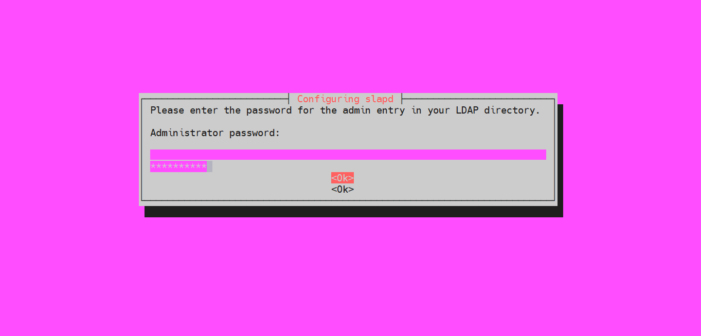
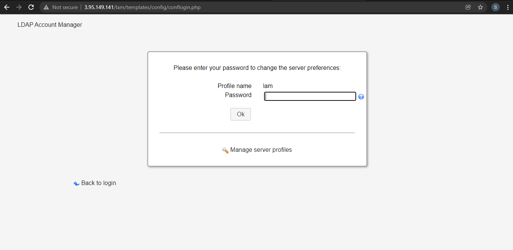
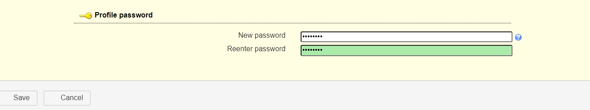
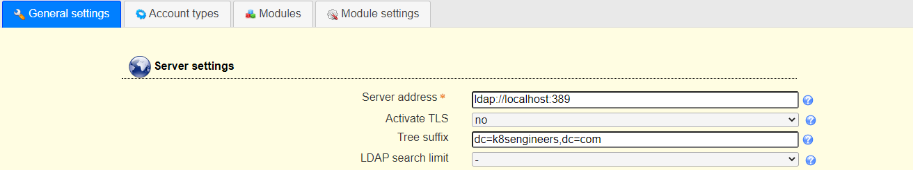
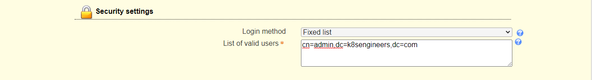
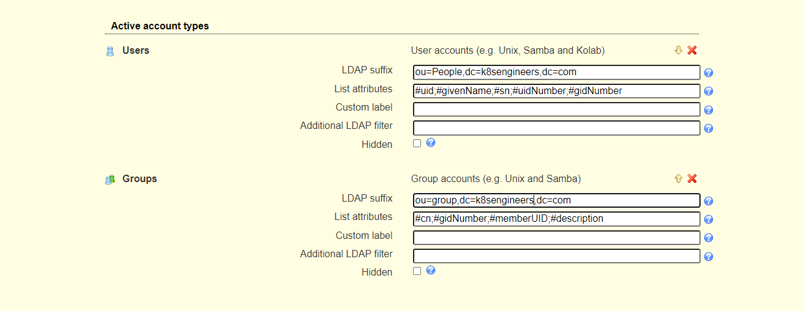
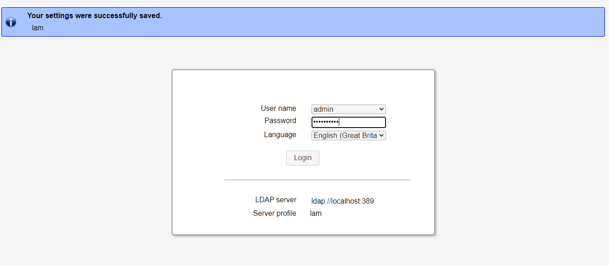
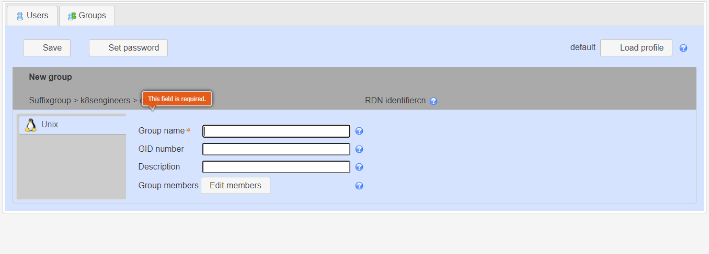
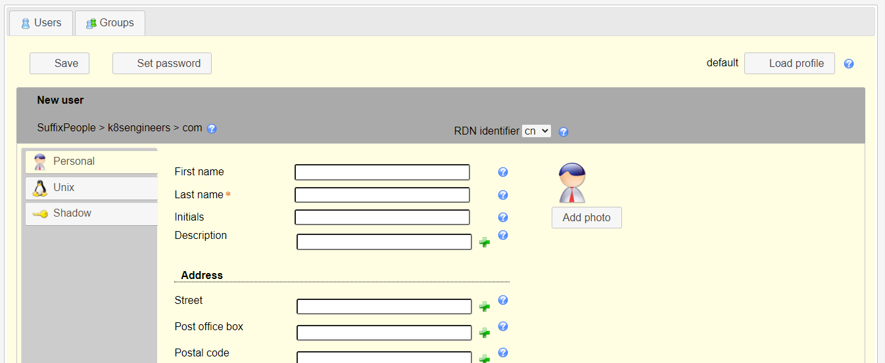
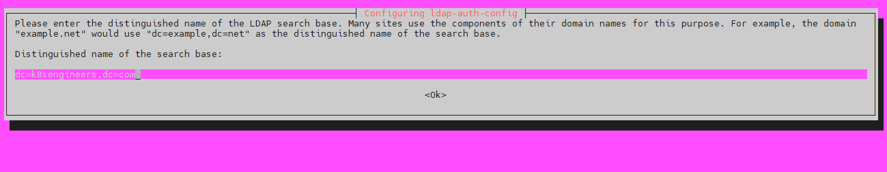

Install and Configure OpenLDAP Server on Ubuntu¶
Set hostname for the Ubuntu server¶
sudo hostnamectl set-hostname ldap.k8sengineers.com
vim /etc/hosts
192.168.0.151 ldap.k8sengineers.com
Note
Replace ldap.k8sengineers.com with your correct hostname/valid domain name.
Install OpenLDAP Server on Ubuntu¶
sudo apt update
sudo apt -y install slapd ldap-utils

Confirm the password and continue the installation by selecting
You can confirm that your installation was successful using the commandslapcat to output SLAPD database contents.
sudo slapcat
dn: dc=k8sengineers,dc=com
objectClass: top
objectClass: dcObject
objectClass: organization
o: k8sengineers.com
dc: k8sengineers
structuralObjectClass: organization
entryUUID: 0139eef2-f01c-103b-8cf7-cb31a244bcdd
creatorsName: cn=admin,dc=k8sengineers,dc=com
createTimestamp: 20211213045057Z
entryCSN: 20211213045057.125264Z#000000#000#000000
modifiersName: cn=admin,dc=k8sengineers,dc=com
modifyTimestamp: 20211213045057Z
dn: cn=admin,dc=k8sengineers,dc=com
objectClass: simpleSecurityObject
objectClass: organizationalRole
cn: admin
description: LDAP administrator
userPassword:: e1NTSEF9aXpJOXpJT2tTUUNIUzkrVzJpUVQ5L1M4WVRzZjMvUU4=
structuralObjectClass: organizationalRole
entryUUID: 013a5ebe-f01c-103b-8cf8-cb31a244bcdd
creatorsName: cn=admin,dc=k8sengineers,dc=com
createTimestamp: 20211213045057Z
entryCSN: 20211213045057.128175Z#000000#000#000000
modifiersName: cn=admin,dc=k8sengineers,dc=com
modifyTimestamp: 20211213045057Z
Add base dn for Users and Groups¶
The next step is adding a base DN for users and groups. Create a file named basedn.ldif with the below contents:
vim basedn.ldif
dn: ou=people,dc=k8sengineers,dc=com
objectClass: organizationalUnit
ou: people
dn: ou=groups,dc=k8sengineers,dc=com
objectClass: organizationalUnit
ou: groups
Now add the file by running the command:
ldapadd -x -D cn=admin,dc=k8sengineers,dc=com -W -f basedn.ldif
Output
adding new entry "ou=people,dc=k8sengineers,dc=com"
adding new entry "ou=groups,dc=k8sengineers,dc=com"
Add User Accounts and Groups¶
Generate a password for the user account to add.
sudo slappasswd
Output
{SSHA}ls2kqhrLiMuKg9w3JcMq4y1Cefi0amAx
Create a ldif file for adding users.
vim ldapusers.ldif
dn: uid=admin,ou=people,dc=k8sengineers,dc=com
objectClass: inetOrgPerson
objectClass: posixAccount
objectClass: shadowAccount
cn: admin
sn: Wiz
userPassword: {SSHA}ls2kqhrLiMuKg9w3JcMq4y1Cefi0amAx
loginShell: /bin/bash
uidNumber: 2000
gidNumber: 2000
homeDirectory: /home/admin
- Replace admin with the username to add
- dc=k8sengineers,dc=com with your correct domain values.
- cn & sn with your Username Values
- {SSHA}ls2kqhrLiMuKg9w3JcMq4y1Cefi0amAx with your hashed password
When done with the edit, add an account by running.
ldapadd -x -D cn=admin,dc=k8sengineers,dc=com -W -f ldapusers.ldif
Output
adding new entry "uid=admin,ou=people,dc=k8sengineers,dc=com"
Do the same for the group. Create a ldif file:
vim ldapgroups.ldif
dn: cn=admin,ou=groups,dc=k8sengineers,dc=com
objectClass: posixGroup
cn: admin
gidNumber: 2000
memberUid: admin
ldapadd -x -D cn=admin,dc=k8sengineers,dc=com -W -f ldapgroups.ldif
Output
adding new entry "cn=admin,ou=groups,dc=k8sengineers,dc=com"
You can combine the two into single file.
Install LDAP Account Manager on Ubuntu¶
Install Apache Web server & PHP
sudo apt -y install apache2 php php-cgi libapache2-mod-php php-mbstring php-common php-pear
-
For Ubuntu 22.04:sudo a2enconf php8.0-cgi
-
For Ubuntu 20.04:sudo a2enconf php7.4-cgi
-
For Ubuntu 18.04: sudo a2enconf php7.2-cgi
Here I'm using Ubuntu 20.04:
sudo a2enconf php7.4-cgi
sudo systemctl reload apache2
sudo apt -y install ldap-account-manager
http://< IP address >/lam
The LDAP Account Manager Login form will be shown. We need to set our LDAP server profile by clicking on[LAM configuration] at the upper right corner.

Then click on, Edit server profiles
This will ask you for the LAM Profile name Password
Note
The default password is lam

The first thing to change is Profile Password, this is at the end of the General Settings page.

Next is to set the LDAP Server address and Tree suffix. Mine looks like below, you need to use your Domain components as set in the server hostname.

Set Dashboard login by specifying the admin user account and domain components under the “Security settings” section

Switch to the “Account types” page and set Active account types LDAP suffix and List attributes.

Add user accounts and groups with LDAP Account Manager¶
Log in with the account admin to the LAM dashboard to start managing user accounts and groups.

Add User Group
Give the group a name, optional group ID, and description. 
Add User Accounts Once you have the groups for user accounts to be added, click on Users > New user to add a new user account to your LDAP server. You have three sections for user management:
- Personal – This contains the user’s personal information like the first name, last name, email, phone, department, address e.t.c

Configure your Ubuntu 22.04|20.04|18.04 as LDAP Client¶
The last step is to configure the systems in your network to authenticate against the LDAP server we’ve just configured:¶
Add LDAP server address to /etc/hosts file if you don’t have an active DNS server in your network.
sudo vim /etc/hosts
192.168.18.50 ldap.k8sengineers.com
sudo apt -y install libnss-ldap libpam-ldap ldap-utils

-
Set a Distinguished name for the search base 
-
Select LDAP version 3
- Select Yes for Make local root Database admin
- Answer No for Does the LDAP database require login?
- Set LDAP account for root, something like cn=admin,cd=k8sengineers,cn=com
- Provide LDAP root account Password
After the installation, edit /etc/nsswitch.conf and add ldap authentication to passwd and group lines.
vim /etc/nsswitch.conf
passwd: compat systemd ldap
group: compat systemd ldap
shadow: compat
Modify the file /etc/pam.d/common-password Remove use_authtok on line 26 to look like below.
vim /etc/pam.d/common-password
password [success=1 user_unknown=ignore default=die] pam_ldap.so try_first_pass
Enable creation of home directory on the first login by adding the following line to the end of file /etc/pam.d/common-session
session optional pam_mkhomedir.so skel=/etc/skel umask=077
Test by switching to a user account on LDAP
sudo su - <username>